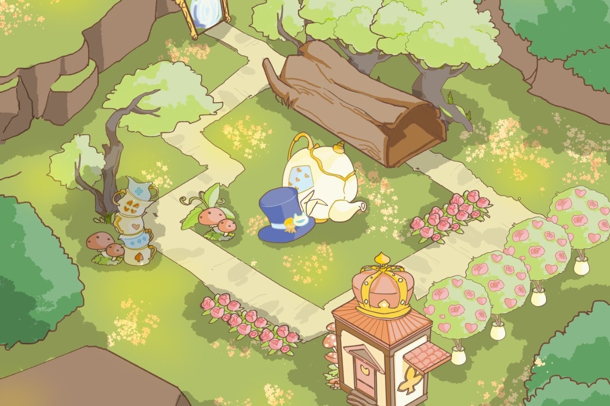
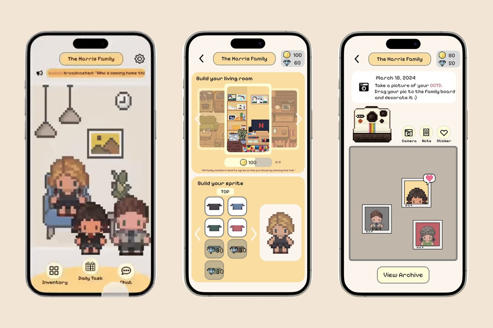

360 Studio
2026 In progress
Producer
UX Design
CMU ETC
What makes play around a 360° screen work? A semester of prototypes and playtests to find out.
visit · 00:00


·· 2026 · Photo by me
Oulan Li
\oh·lan\
I’m an experience designer working across interfaces, games and research. Trained in UI/UX, I now design and produce playful experiences for various interfaces at Carnegie Mellon’s Entertainment Technology Center, and test them with real people until they work.


